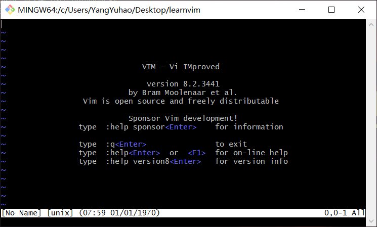
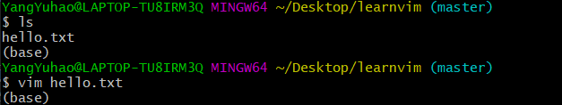
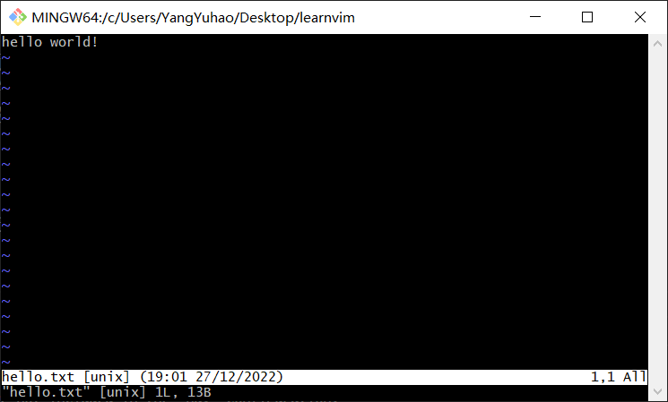
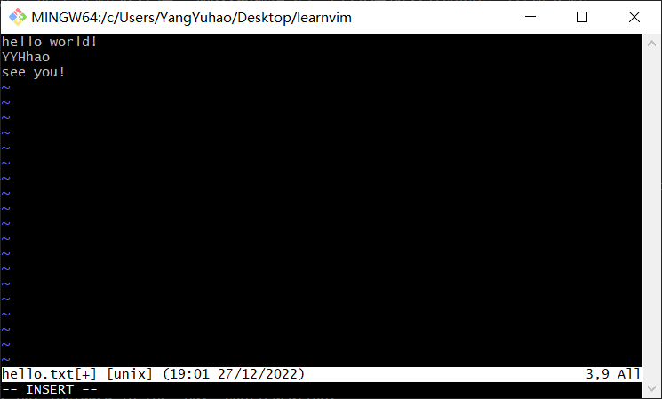
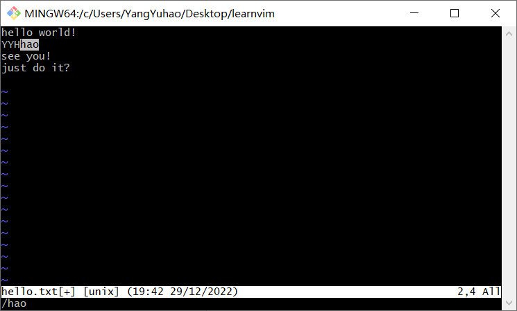
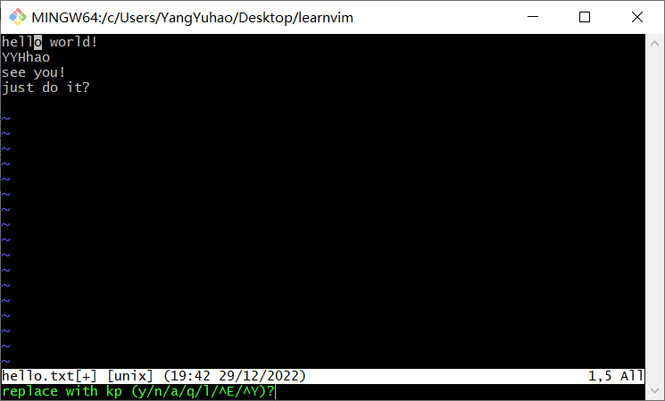
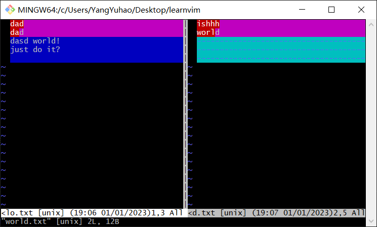
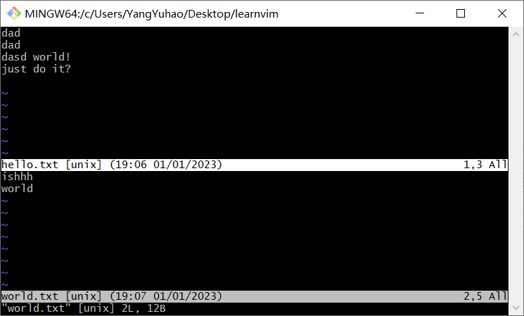

前言¶
git默认的编辑器是Vim，git-bash时也会使用到很多vim命令，不过最新版的git安装时已经可以选择默认编辑器了。Vim确实很强大，但许多Windows用户已经重度依赖GUI类的编辑器，这里有两种方法解决，一种方法是修改git默认编辑器，另一种方法就是掌握Vim编辑器的使用。
Vim编辑器¶
vi（visual editor）编辑器Linux和Unix系统上最基本的文本编辑器，类似于Windows 系统下的notepad（记事本）编辑器。而Vim(Vi improved)是vi编辑器的加强版，vi的命令几乎全部都可以在vim上使用，并且比vi更容易。Vim 代码补全、编译及错误跳转等方便编程的功能特别丰富，在程序员中被广泛使用。
安装Vim¶
Linux通常都已经默认安装好了 vi 或 Vim 文本编辑器，我们只需要通过vim命令就可以直接打开vim编辑器，如下图：

也可以使用yum工具对vim编辑器进行安装：
yum install -y vim
为什么用Vim¶
-
每个系统管理员对于文本编辑器都有偏好，一些人会选择gedit，另一些则喜欢nano，还有人选用emacs。但只有vim是随Linux和UNIX系统分发的vi编辑器的改进版本，无论操作的系统是什么，此款编辑器都能可靠地安装使用。
-
Vim 是一个高效的编辑器，高效包含两层意思：Vim 打开或关闭非常快（秒开）；编辑者本人能高效操作，让我们双手不离开键盘的情形下，完成与编辑文档或写代码所有的相关操作（实现不用鼠标完成一系列操作）。
-
因为 Linux 服务器为了节省内存，提高效率等原因，大型网站的服务器一般是无图形化界面的Linux系统，当需要进行调试、远程处理问题的时候，只能调出terminal（终端窗口），然后用命令"vim index.html"这样的方式，调出vim编辑器，再进行更改。
Vim的三种模式¶
基本上 vi/vim 共分为三种模式，分别是命令模式（Command mode），输入模式（Insert mode）和底线命令模式（Last line mode）。
命令模式：控制屏幕光标的移动，字符、字或行的删除，移动复制某区段及进入Insert mode下，或者到 last line mode。
输入模式：只有在Insert mode下，才可以做文字输入，按「ESC」键可回到命令行模式。
底线命令模式：将文件保存或退出vim，也可以设置编辑环境，如寻找字符串、列出行号等。
Vim的基本操作¶
a)进入vim
在系统光标提示符后，输入vim及文件名后，回车，进入Vim编辑画面。进入vim之后，默认是处于「命令行模式（command mode）」，要切换到「插入模式（Insert mode）」才能够输入文字。
注意：使用vim打开文件，若文件已存在，则直接打开；如果文件不存在，则vim编辑器会自动在内存中创建一个新文件。


b)切换至插入模式（Insert mode）编辑文件
一般情况下，在「命令行模式（command mode）」下按一下字母「i」就可以进入「插入模式（Insert mode）」，这时候你就可以开始输入文字了。

c)插入模式（Insert mode）切换到命令行模式（Command mode） 在插入模式下，按一下「ESC」键即可。也可以多按几次 Esc 键，保证顺利返回到命令模式。
d) 退出vim及保存文件
在命令行模式（Command mode）下，按冒号「:」键，进入底线命令模式（Last Line mode）。
常用的文件保存命令：
:w filename 文件以filename为文件名保存
:wq 文件存盘并退出vim
:q 文件不存盘并退出vim
:q! 文件不存盘强制退出vim
不同模式下Vim的常用命令¶
命令模式¶
在此模式下，可以使用上、下、左、右键进行光标移动，也可以键入不同的命令完成选择、复制、粘贴、删除等操作。
注意：有些不同指令可以实现相同的效果，这里用" | "表示，同时指令需要区分大小写。
命令光标跳转：
G (shift + g) 跳转光标至末尾
gg 跳转光标至开头
Ngg 跳转光标至当前文件内的N行(N为数字)
$ 将当前光标跳转至光标所在行的末端(尾部)
^|0 将当前光标跳转至光标所在行的头部 <=> 数字0 可实现类似效果
yy 复制当前光标所在的行
Nyy|yNy 复制从当前光标所在行开始数向下的N行（N为数字）
p(小写) 粘贴至当前光标下一行
P(大写) 粘贴至当前光标上一行
dd 删除当前光标所在的行
Ndd|dNd 删除当前光标所在的行以及往下的N行(N为数字)
dG 删除当前光标所在及之后的所有行
D 删除当前光标所在行中光标之后的内容
x 删除当前光标标记往后的一个字符
X 删除当前光标标记往前的一个字符
ddp 先删除dd(或Ndd)，后粘贴p
u 撤销上一次的操作(类似windows下的ctrl+z)
r 替换当前光标之后的单个字符(输入r后，再输入的单个字符就是替换后的内容)
R 进入REPLACE模式, 连续替换，ESC结束(实质还是单个字符的替换，只不过光标自动后移)
Ctrl+r 当你执行了撤销u的时候，发现撤销错了，回滚
编辑模式¶
在编辑模式下可以编辑文本内容。在命令模式下按 i、 a 、o等键可以进入编辑模式，在此模式下可以输入文本，但命令执行后的字符插入位置不同。
i 进入编辑模式，光标不做任何操作
I 进入编辑模式，并且光标会跳转至本行的头部
a 进入编辑模式，将当前光标往后一位
A 进入编辑模式，将光标移动至本行的尾部
o 进入编辑模式，并在当前光标下添加一行空白内容
O 进入编辑模式，并在当前光标上添加一行空白内容
s 进入编辑模式，并删除当前光标下的字符
S 进入编辑模式，并删除当前光标所在行
底线命令模式¶
命令模式下按" : "键进入底线命令模式。这时光标会移到屏幕底部，在这里可以输入相关指令保存修改或退出 Vim，也可以设置编辑环境、寻找字符串、列出行号等。指令执行后会自动返回命令模式。
:w //保存当前状态
:w! //强制保存当前状态
:q //退出当前文档(文档必须保存才能退出)
:q! //强制退出文档不会修改当前内容
:wq //先保存，在退出
:wq! //强制保存并退出
:x //先保存，在退出
ZZ //保存退出, shfit+zz
:number //跳转至对应的行号,和普通模式Ngg一个意思
查找 /string 输入需要搜索的内容string，回车进行下列操作
n 按搜索到的内容依次往下进行查找
N 按搜索到的内容依次往上进行查找
替换
:1,5s#sbin#test#g 替换1-5行中包含sbin的内容为test
:%s#sbin#test#g 替换整个文本文件中包含sbin的替换为test
:%s#sbin#test#gc 替换内容时提示是否需要替换
%表示所有行 s表示替换 g表示所有匹配到的内容 c表示提示
替换提示时的相关操作：
替换为 w (y/n/a/q/l/^E/^Y)？
y:替换一次
n:选中下一个
a:全部替换
q:退出
l:替换一次并退出询问
另存
:w /root/test 将文件所有内容另存为/root/test
读入
:r /etc/hosts 读入/etc/hosts文件至当前光标下面
:5r /etc/hosts 指定/etc/hosts文件当前文件的哪行下面

:%s#sbin#test#gc命令：

vim视图模式¶
视图模式，是属于命令模式之下的一种模式
ctrl+v 进入VISUAL BLOCK 选中需要注释的行（可视块模式）
1.插入:按shift+i进入编辑模式,输入#,结束按ESC键
2.删除:选中内容后，按x或者d键删除
3.替换:选中需要替换的内容, 按下r键,然后输入替换后的内容
# 2.批量修改文件（添加注释）
1)按Ctrl + v进入可视块视图模式
2）移动光标-1.按下键-2.Ngg-3.G
3)按 Shift + i 进入编辑模式
4）输入"#"
5）按ESC退出编辑模式
shift+v 进入VISUAL LINE 选中行内容（可视行模式）
1.复制:选中行内容后按y键及可复制。
2.删除:选中行内容后按d键删除
其它vim操作指令¶
文件对比命令：
vimdiff [FILE_1] [FILE_2]

vim 同时编辑多个文件，即分屏，在Vim 命令行模式下输入：
vim -On [FILE_1] [FILE_2] ...
vim -on [FILE_1] [FILE_2] ..
-o：水平分割（将多个文件上下分屏）
-O：垂直分割（将多个文件左右分屏）
n：表示分几个屏，可以缺省不写，默认按后面要分割的文件数来决定分几个屏
[FILE_1][FILE_2]： 需要打开文件

切换文件： 当同时编辑多个文件时，实现不同文件间的来回切换
Ctrl + ww
菜鸟教程：https://www.runoob.com/linux/linux-vim.html
Learn-Vim(the Smart Way)中文翻译
https://www.cnblogs.com/lwlw/p/16078287.html